Name
gtkam — Graphical front end for gphoto2
Commands
Warning
New as it is, this man reference is already under revision to reflect the changes from gtkam v 0.1.3 to v.0.1.9. As such, there are several discrepancies and errors. There are also a number of screenshots which came from gtkam 0.1.3. Bear with us as we edit...
File Menu

- File->Save Photos
Gives options to save photos to the computer.
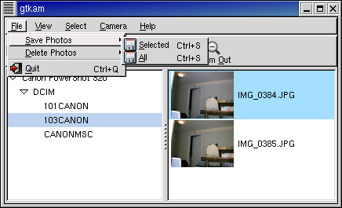- File->Save Photos->Selected
Saves the selected photos from the camera to the computer.
- File->Save Photos->All
Saves all photos in the camera to the computer.
Both menu items open a "Save photos..." dialog box which allows the user to select the folder to save the images in, as well as a number of other options.
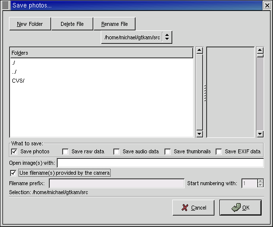- What to save:
This is a set of checkboxes which allows the user to select the forms in which data for the selected image(s) will be saved. Any or all of these options may be selected at once.
- Save photos
This is the default. It causes the photos being saved to be downloaded from the camera and saved to the identified folder.
- Save raw data
FIXME: What to say?
- Save audio data
Causes any audio data associated with the image to be saved to the selected folder.
- Save thumbnails
Saves a small version of the selected images to the identified folder.
- Save EXIF data
Saves the EXIF data associated with the images.
FIXME: should we say more about the EXIF format?
- Open image(s) with:
This allows the user to specify FIXME ??
- Use filename(s) provided by the camera.
Causes the saved files to have the names provided by the camera.
- Filename prefix:
Defines a prefix to be used when creating filenames. This prefix is combined with the number starting with the number defined in:
- Start numbering with:
Defines the first number of the sequence of photos to be stored.
- File->Delete Photos
Gives options to delete photos from the camera.
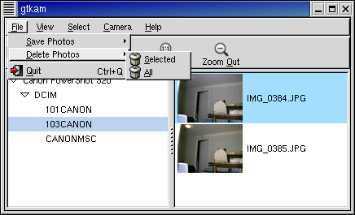- File->Delete Photos->Selected
Deletes selected photos from the camera.
- File->Delete Photos->All
Deletes all photos in the camera.
Both of these menu items open a dialog to confirm the deletion of the photos. A list of photos is presented with a checkbox beside each photo name. Uncheck the box to prevent a specific file from being deleted.
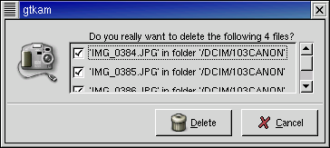- File->Quit
Quits gtkam.
View Menu
Gives options for previewing photos before downloading them from the camera.

- View->View Thumbnails
This is the same command as the checkbox on the main gtkam window. It allows the user to select whether thumbnails of the photos are displayed, or just the file names.
- View->Zoom In
Enlarges the thumbnails.
- View->Zoom 100
Returns the thumbnails to default size.
- View->Zoom Out
Reduces the thumbnails.
Select Menu
- Select->All
Selects all pictures in the camera.
- Select->Inverse
Inverts the selections already made so that previously unselected images are now selected, and previously selected images are now unselected.
- Select->None
Undoes all selections so that no images are selected.
Camera Menu
- Camera->Add Camera...
Opens a window to allow the user to define the camera and interface being used.
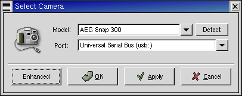"Simple" Select Camera Dialog.
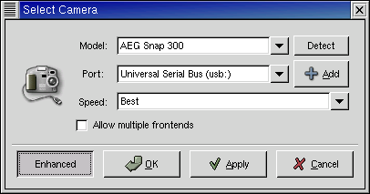"Enhanced" Select Camera Dialog.
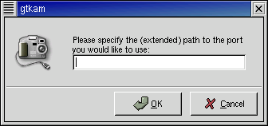Dialog for explicitly adding a path to the port to which the camera is attached.
Help Menu
- Help->Debug...
Opens the logging window which allows the user to select the type of messages to log.
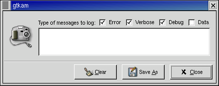- Error
causes the logging of any error messages.
- Verbose
Increases the amount of information being logged. (I can't see what effect this has. - mjr)
- Debug
Causes the logging of progress reports as the software communicates with the camers.
- Data
Causes the logging of all data being transferred from the camera. This will generate huge quantities of hexadecimal information.
- Save As...
opens a dialog to allow the user to save the information logged in the debug window.
- Close
Closes the debug window
- Help->About...
Opens the about gtKam window. This gives the current version, author credits, and contact information.
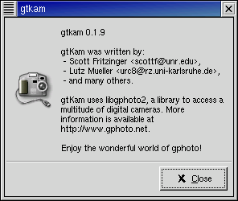
Right Click (over directory pane) Menu
- Right Click->Upload File
Opens a dialog to identify an image file for uploading to the camera.
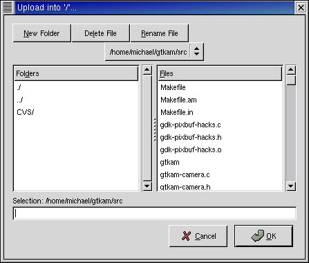- Right Click->Make directory
Opens dialog to create new directory.
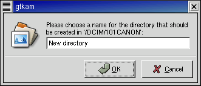- Right Click->Remove directory
Opens a dialog to remove (delete) an existing folder (directory).
- Right Click->Capture
Opens a window to allow the user to trigger the camera to acquire an image. (This feature is not available on my camera, so I would appreciate some input on this item. -mjr)
- Right Click->Preferences
- 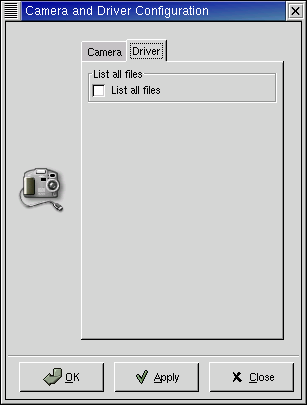
Camera configuration tab.

Driver configuration tab.
- Right Click->Summary
Displays a window with information about the camera and its memory.

- Right Click->Manual
I'm not sure what this should contain. Anyone? - mjr

- Right Click->About
Displays a window with information about the camera driver and its authors.
This should include contact information for the maintainers of the drivers for your camera.
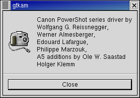- Right Click->Select Camera
Opens the Add Camera dialog.
- Right Click->Remove Camera
Removes the camera from the directory pane.
Right Click (over list pane) Menu
- Right Click->View with...->Built-in viewer
Downloads the image under the cursor and displays it in a new window. The window automatically resizes the image to fill the window.
- Right Click->Info
Presents file name, type, size, date and permissions information about the image under the cursor.
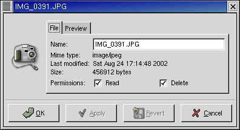- Right Click->Save
Downloads the image under the cursor and opens a dialog to allow it to be saved to the computer.
- Right Click->Delete
Opens a dialog to allow the user to delete the image under the cursor.